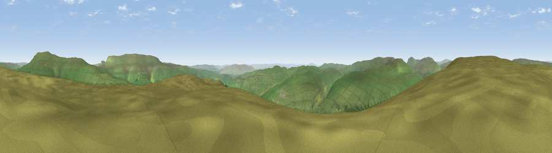

Viewpoint near Starbotton
#9193 in England · top 14% of its area beats it · near StarbottonWhere it is
The exact computed spot (SD 93725 73725). Click the marker for map links.
The view, rendered

A 360° render of this exact spot computed from the terrain model, tree cover and land cover — summer colours, afternoon light, calibrated against photographs of famous viewpoints. Real trees, hedges and buildings will differ in detail.
The panorama
Grey silhouette: terrain skyline in each direction (720 bearings, Earth curvature and refraction included). Dashed green: skyline with trees (+15 m) and buildings (+8 m) as obstacles. Blue strip: how far the ground is visible on each bearing.
Where the view opens
Wedge length = distance to the farthest visible ground on that bearing (vegetation-aware). Rings at 10, 25 and 50 km.
What fills the view
94% grassland · 6% woodland
Angular shares of the visible panorama (visual magnitude), not map area. Landscape diversity 0.10 (0–1 Shannon).
Key numbers
More beautiful places nearby
The staircase of upgrades: each row has a higher view potential than everything closer. Driving times are estimates from straight-line distance, calibrated against real road routing — check an actual route before setting out.
| Place | Direction | Drive | Score |
|---|---|---|---|
| Viewpoint near Starbotton | ESE · 0 km | ~1 min | 68.9 |
| Viewpoint near Buckden | NNE · 5 km | ~11 min | 75.5 |
| Viewpoint near Buckden | NNE · 6 km | ~12 min | 77.3 |
| Little Ingleborough | W · 19 km | ~33 min | 78.8 |
| Viewpoint near Ingleton | W · 20 km | ~33 min | 79.5 |
| Whernside | WNW · 21 km | ~36 min | 79.9 |
| Warton Crag | W · 44 km | ~65 min | 83.2 |
| Viewpoint near Grange-over-Sands | W · 54 km | ~76 min | 83.4 |
54.15930, -2.09759 · source: screening · position refined by local search. Computed location — check access rights before visiting.